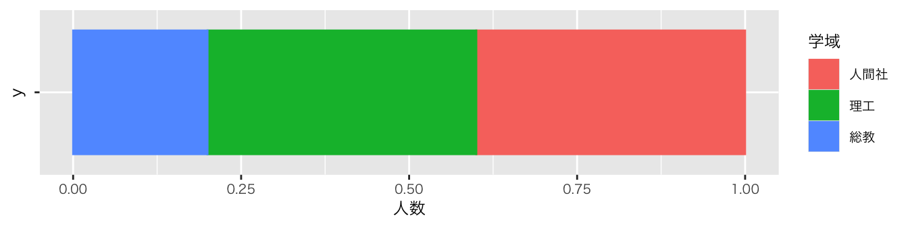
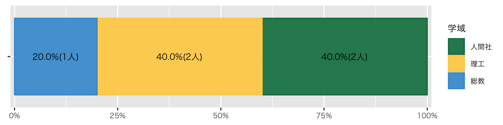
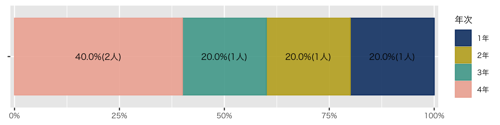
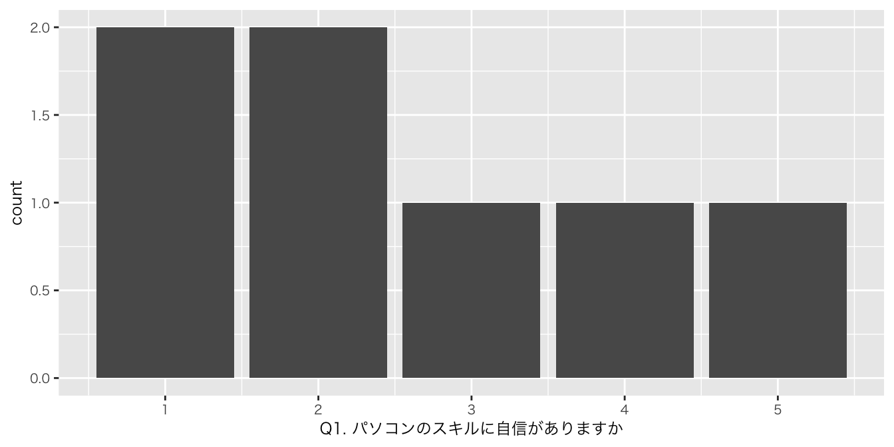
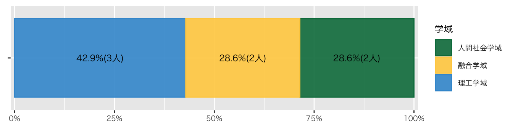
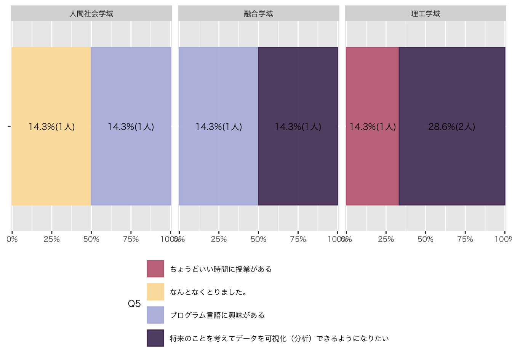
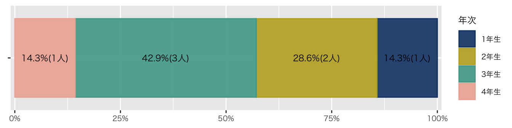
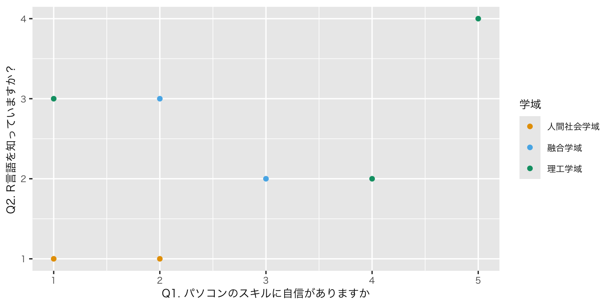
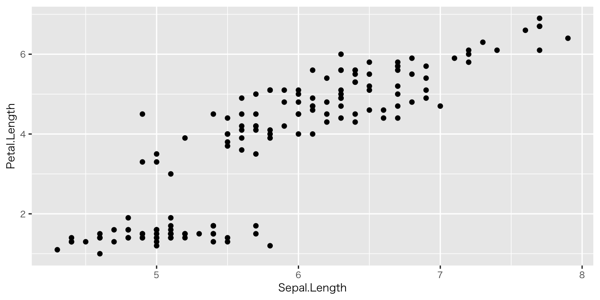

Code
leaflet() |>
addTiles() |>
setView(lng = 136.70847,
lat = 36.54517,
zoom = 18)高大接続コア・センター（インキュベーション施設3F）
苅谷 千尋, PhD ![]()
図とデータ；Rのインストールとプロジェクトの作成
基礎医学生物学研究者のブログ: 実験データの解析はエクセルではなくRを使った方がその研究は成功する
基礎医学や生物学の研究者は未だマイクロソフトのエクセルを使っている者がほとんどでは無いかと思う。その理由は、これらの分野での主な実験は、ある遺伝子をノックアウトしたり、逆にその遺伝子発現を増やしたり、その結果として起こる生物学的な変化を観察したりして、その分子が関連するメカニズムを解明することであり、極端な話、簡単な棒グラフや折れ線グラフ以外必要ないためだ。これまでそのような状況だったので現時点（２０２２年４月）では多くの生物学の研究室のPI（Principal Investigator; PI）は、Rなどを使った解析への心得はなく、むしろ苦手と思っている。そして、そんな中育ってしまったウェットを主な仕事とする生物学系の学生や研究者は、エクセルや他のソフトとしてGraphPad Prism（世界標準）やKaleidagraph（日本人のとある分野の者）などを一生使うことが多い。
しかし、個人的には、エクセルやGraphPad Prismを基礎医学、生物学の研究で使うのはもはや時代錯誤になってきていると思う。さらに悪いことに、エクセルやGraphPad Prismなどは、統計の知識がゼロでも統計解析ができてしまうという欠点がある。さらにエクセルに至ってはテーブルのフォーマットが自由すぎでそのテーブルを作った本人（このひとたちは当然、データベースで使われるようなテーブルのフォーマットに関する知識などあるはずもない）にしか読めないという再現性にとって最悪な特徴さえある。なので、このご時世、基礎医学、生物学研究でしっかりしたデータを得ようとするならば、RやSASを使って解析をするべきだろうと個人的には思っている。
Airbnbのデータサイエンス・チームはデータを理解するために毎日Rを使っています。Pythonを使ってデータサイエンスしている人達も多いですが、AirBnBではRが一番良く使われているデータサイエンスのプログラミング言語です。最近の社内のデータサイエンス・チームに対してのアンケートでは、73％のデータサイエンティストとアナリストがRを使うことに関して自分たちをエキスパート（専門家）・レベルだと思っています。そして、58％の人たちがRを毎日のようにデータ分析に使います。
Rはデータ分析の一連のフローの中で全ての場面で使われます。例えば、探索的(Exploratory)データ分析、予測モデルの作成、ビジネス・パートナーと結果を共有するといった場面です。この記事の中ではRがどのように使われているか、さらに、これからRを使ってデータをもっと理解していきたいと考えている人たちへの実用的なアドバイスを共有したいと思います。
df_受講生 |> #対象とするデータフレーム
group_by(学域) |> #学域でデータを分ける
summarise( #分けたデータの個数を数える
人数 = n()
) |>
mutate(
比率 = 人数/sum(人数) #個数から比率を算出
) |>
ungroup() |> #グルーピングの解除
ggplot(aes(x = 人数, y = "", group = 学域)) + #図の台座
geom_col( #帯グラフ
aes(color = 学域, fill = after_scale(alpha(color, 0.9))),
position = position_fill(),
) +
geom_text( #帯グラフにテキストを貼る
aes(label = str_c(scales::label_percent(accuracy = 0.1)(比率), "(", 人数, "人)")),
position = position_fill(reverse = FALSE, vjust = 0.5),
) +
scale_x_continuous( #X軸の余白を詰める
expand = expansion(mult = c(0.01, 0.01)),
labels = scales::label_percent()) + #X軸をパーセントにする
labs(
color = "学域" #凡例のラベルを「学域」に変更
) +
theme(
axis.title = element_blank() # 軸タイトル要素を空にする
) +
scale_color_paletteer_d("awtools::mpalette") #配色変更
df_受講生 |> #対象とするデータフレーム
group_by(学域) |> #学域でデータを分ける
summarise( #分けたデータの個数を数える
人数 = n()
) |>
ungroup() |> #グルーピングの解除
ggplot(aes(x = 人数, y = "", fill = 学域)) + #図の台座（x軸とy軸を考える）
geom_col( #帯グラフ
aes(color = 学域),
position = position_fill()
) 
df_受講生 |> #対象とするデータフレーム
ggplot(aes(y = "")) + #図の台座
geom_bar( #帯グラフ
stat = StatCount, #デフォルトなので書かなくてもこれ：行数をカウントする
aes(
color = 学域,
fill = after_scale(alpha(color, 0.9))
),
position = position_fill(),
) +
geom_text( #帯グラフにテキストを貼る
#geom_textはデフォルトのStatではないので明示的に書く必要あり。
#積み上げグラフで棒ごとに100%にしてfillの割合を計算できないので、GGallyパッケージのStatPropが必要
stat = GGally::StatProp,
#aes(label = str_c(scales::percent(比率, accuracy = 0.1), "(", 人数, "人)")),
aes(
by = 1, # 棒が1つでy=""と仮のものを与えているので、とりあえず固定値の1にしておく。
group = 学域, # StatPropでは棒ごとに学域の割合を集計
#statで集計した値は、after_stat(count)でカウント、after_stat(prop)で割合が取り出せる。
label = str_c(scales::label_percent(accuracy = 0.1)(after_stat(prop)), "(",
after_stat(count), "人)")
),
position = position_fill(vjust = 0.5),
) +
scale_x_continuous(
expand = expansion(mult = c(0.01, 0.01)), #X軸の余白を詰める
labels = scales::label_percent() #X軸をパーセントにする
) +
labs(
color = "学域" #凡例のラベルを「学域」に変更
) +
scale_color_paletteer_d("awtools::mpalette") + #配色変更
theme(
axis.title = element_blank() # 軸タイトル要素を空にする
)
df_受講生 |>
summarise(
.by = 年次,
人数 = n()
) |>
mutate(
比率 = 人数/sum(人数)
) |>
ungroup() |>
ggplot(aes(x = 人数, y = "", group = 年次)) +
geom_col(
aes(color = 年次, fill = after_scale(alpha(color, 0.9))),
position = position_fill(),
) +
geom_text(
aes(label = str_c(scales::percent(比率, accuracy = 0.1), "(", 人数, "人)")),
position = position_fill(reverse = FALSE, vjust = 0.5),
) +
scale_x_continuous(
expand = expansion(mult = c(0.01, 0.01)),
labels = scales::label_percent()) +
labs(
color = "年次"
) +
scale_color_paletteer_d("PrettyCols::Fun") +
theme(
axis.title = element_blank() # 軸タイトル要素を空にする
)
leaflet() |>
addTiles() |>
setView(lng = 136.70847,
lat = 36.54517,
zoom = 18)高大接続コア・センター（インキュベーション施設3F）
なぜそうするのか（why） / どうやって作図するのか（how）
概略
一連の例題を通じ、パーツを少しずつ積み上げてグラフを作 り上げていく方法を勉強していきたいと思います。散布図と1 変数の要約から始め、より複雑なグラフへと進んでいきます。 本書の解説は幅広いトピックをカバーしており、連続量とカテ ゴリカル変数の階層情報を含んだグラフ、効果的な小規模多 変量プロットを作るためのデータの切り出しとグループ化、時系列の折れ線グラフ・平滑化・誤差範囲・箱ひげ図といったグラフに用いる要約情報をデータから簡単に作り出す方法,地図の描画方法と国や州単位のデータを提示する際に考えておくべきいくつかの方法について述べます。また、データセットそのものを可視化するのではなく、統計的モデルに基づく推定量を取り扱うケースも紹介します。そこから次のステップでは、グラフを磨き上げるための一般的な技術として、データの鍵となる特徴をハイライトしたり、関心のある特定の要素にラベルを振ったり、注釈をつけたり、全体的な見栄えを調整したりする技術について解説します。最後にはグラフを誰が読むのかという点を考慮し、結果をグラフィックスとしてどう演出するか、その考え方をいくつか説明します（13頁）。
色の体系を選ぶとき､データを数値的に色にマッピングするのみならず知覚的にも統一されているように選びたいと考えると思います。Rはこれが実現するように色モデルや色空間を提供しようと試みています（43頁）
位置と長さ以外の符号は一般的に難易度が高く、グラフの逆 符号化の際にエラーが発生しやすくなります。例えば角度で符 号化されている場合、誤った判断を行う傾向があります。すな わち鋭角の大きさは過小評価され、鈍角は過大評価される傾向 があるのです。円グラフの使用が、通常、悪い選択肢であるこ との理由の1つがこれです。また領域を評価することも不得意 で、判断を誤る傾向があります。面積に基づく定量的な比較は、 簡単に誤解や誇張を生み出すことは昔から知られています（54頁）
ggplot の本当の強みは、これらのさまざまな要素を整理 して意味を持たせ、グラフィックスの文法(grammar of graphics)として実装している点です(Wilkinson, 2005). プ ロットの外観に関するすべての側面を一度に設定するための概 念的に等価な巨大なリストを採用するのではなく､ggplotではグラフ構造への関連に応じて、グラフを作るというタスクをうまく切り分け、一連の個別のタスクにしていきます。コードを記述するとき、全体の作業内容の中の特定の部分を制御する関数を使って個別のタスクを実行します。最初の段階で は ggplot() 関数がほとんどすべての作業を担います。必要な手順はたった2つだけです。第1に、ggplot()関数に必要な情報をわたしてください。これにより、どのデータを用いるのか、プロットの特徴としてどの変数を読み込んで配置するのかといったプロットのコアとなる情報が確定されます。第2に、geom_関数を選んでください。これにより散布図・棒グラフ・箱ひげ図など描画されるグラフの種類が決定されます（62頁）。
定量化とは魅力的なものだ。知識を整理して、単純化してくれるからだ。人や組織間で簡単に比較できる数値情報を提供してくれる。だが、この単純化はゆがみにつながる可能性がある。何かを比較可能にするというのは往々にして本来の概念、歴史、意味をはぎとってしまうことを意味するからだ。その結果、情報は問題の現実よりも確実で権威あるもののように見える。危険信号や曖昧さ、不確定要素ははぎとられる。特定の知識の体裁を整えるには、数値で表現するのが一番だ（Jerry Z. Muller (2018)）
正確に測定できるものが、本当に重要なものを見劣りさせるようになっていく（Jerry Z. Muller (2018)）
現在は、大量の変数が入ったデータセットを作りやすく、かつ、様々な視点から高度な分析が可能な統計分析ソフトウェアも発展している。よって、研究者としては、とにかく大量の変数の入ったデータセットを作り、これこそが宝が埋め込まれた原石とばかりに、ありとあらゆる分析を統計ソフトにやらせるのである。AIであれば文句を言わずひたすら分析続けることも可能だ。まさに、何か結果がでるまでデータを回しまくる。「データを拷問にかけて自白させる」というのはこういった行為のたとえである。偶然、何らかの結果がでるまで拷問のようにデータを分析しつづける。そうすると、いずれは偶然に有意な結果が出たりなんらかのモデルがデータにフィットするだろう。そうしたら、それに基づいたストーリーを構成して論文を作成するという塩梅である。（原文改行）このようにして作成された論文は眉唾であることは明らかである。偶然起こった結果だから、それが、経営学の法則性やメカニズムを表したものである可能性はかなり小さい（ 「データを拷問にかけ自白させる」「セレンディピティ主義」の危険性）
1 政治にかかわる、莫大で複雑な組み合わせと原因を、理論に還元することは確かに可能である。しかしながら、もっとも広範囲にわたる視野と、もっとも包括的で柔軟な諸原則にもとづいて形成された理論でなければ、これらの多様性をすべて包含し、また、その急速な変転に合わせることはできない。この理論のもっとも基本的な格言は、この理論自体への不信と、実用的な慎慮への敬意である（『自然法と諸国民の法論』､1796）｡
回答先：Google Forms（3分程度でお答えください）
df_初回アンケート |>
ggplot(aes(x = `Q1. パソコンのスキルに自信がありますか`)) +
geom_bar()
df_初回アンケート |>
group_by(学域) |>
summarise(
人数 = n()
) |>
mutate(
比率 = 人数/sum(人数)
) |>
ungroup() |>
ggplot(aes(x = 人数, y = "", group = 学域)) +
geom_col(
aes(color = 学域, fill = after_scale(alpha(color, 0.9))),
position = position_fill(),
) +
geom_text(
aes(label = str_c(scales::percent(比率, accuracy = 0.1), "(", 人数, "人)")),
position = position_fill(reverse = FALSE, vjust = 0.5),
) +
scale_x_continuous(
expand = expansion(mult = c(0.01, 0.01)),
labels = scales::label_percent()) +
labs(
color = "学域"
) +
scale_color_paletteer_d("awtools::mpalette") + #配色変更
theme(
axis.title = element_blank() # 軸タイトル要素を空にする
)
df_初回アンケート |>
group_by(学域, `Q5. 受講理由でもっとも近いものを選んでください`) |> summarise(
人数 = n(), .groups = "drop"
) |>
mutate(
比率 = 人数/sum(人数)
) |>
ungroup() |>
ggplot(aes(x = 人数, y = "", group = 学域)) +
geom_col(
aes(color = `Q5. 受講理由でもっとも近いものを選んでください`, fill = after_scale(alpha(color, 0.9))),
position = position_fill(),
) +
geom_text(
aes(label = str_c(scales::percent(比率, accuracy = 0.1), "(", 人数, "人)")),
position = position_fill(reverse = FALSE, vjust = 0.5),
) +
scale_x_continuous(
expand = expansion(mult = c(0.01, 0.01)),
labels = scales::label_percent()) +
labs(
color = "Q5"
) +
facet_wrap(~ 学域) +
theme(legend.position="bottom") + #凡例を図の下に
guides(color = guide_legend(nrow = 4, byrow = TRUE)) +
scale_color_paletteer_d("DresdenColor::briefcases") +
theme(
axis.title = element_blank() # 軸タイトル要素を空にする
)
df_初回アンケート |>
group_by(学年) |>
summarise(
人数 = n()
) |>
mutate(
比率 = 人数/sum(人数)
) |>
ungroup() |>
ggplot(aes(x = 人数, y = "", group = 学年)) +
geom_col(
aes(color = 学年, fill = after_scale(alpha(color, 0.9))),
position = position_fill(),
) +
geom_text(
aes(label = str_c(scales::percent(比率, accuracy = 0.1), "(", 人数, "人)")),
position = position_fill(reverse = FALSE, vjust = 0.5),
) +
scale_x_continuous(
expand = expansion(mult = c(0.01, 0.01)),
labels = scales::label_percent()) +
labs(
color = "年次"
) +
scale_color_paletteer_d("PrettyCols::Fun") +
theme(
axis.title = element_blank()
)
df_初回アンケート |>
select(5:10) |>
ggplot(aes(x = `Q1. パソコンのスキルに自信がありますか`,
y = `Q2. R言語を知っていますか？`, color = 学域)) +
geom_point() + #散布図
scale_color_okabe_ito() # ggthemeでドットの色を変える（配色は好みの問題でもあるが､okabe_itoはカラーユニバーサルデザインを意識した配色になっている）
df_初回アンケート |>
select(!1:4) |> #1列目から4列目までを削除（回答者の氏名などの情報のため）*以下同じ
# 「!」は除外をさす
# 「x:y」はx列からy列までの範囲の列を指す
summary()gt_table <-
df_初回アンケート |>
select(!1:4) |>
get_summary_stats()
gt_table |> gt()| variable | n | min | max | median | q1 | q3 | iqr | mad | mean | sd | se | ci |
|---|---|---|---|---|---|---|---|---|---|---|---|---|
| Q1. パソコンのスキルに自信がありますか | 7 | 1 | 5 | 2 | 1.5 | 3.5 | 2.0 | 1.483 | 2.571 | 1.512 | 0.571 | 1.398 |
| Q2. R言語を知っていますか？ | 7 | 1 | 4 | 2 | 1.5 | 3.0 | 1.5 | 1.483 | 2.286 | 1.113 | 0.421 | 1.029 |
| Q3. プログラム言語を使ったことはありますか | 7 | 1 | 4 | 2 | 1.5 | 2.5 | 1.0 | 1.483 | 2.143 | 1.069 | 0.404 | 0.989 |
| Q6. Microsoft Excelを使ったことはありますか | 7 | 3 | 5 | 4 | 3.0 | 5.0 | 2.0 | 1.483 | 4.000 | 1.000 | 0.378 | 0.925 |
| Q7. SPSSを使ったことはありますか | 7 | 1 | 3 | 1 | 1.0 | 1.0 | 0.0 | 0.000 | 1.286 | 0.756 | 0.286 | 0.699 |
| Q8. Stataを使ったことはありますか | 7 | 1 | 2 | 1 | 1.0 | 1.0 | 0.0 | 0.000 | 1.143 | 0.378 | 0.143 | 0.350 |
| Q9. SASを使ったことはありますか | 7 | 1 | 2 | 1 | 1.0 | 1.0 | 0.0 | 0.000 | 1.143 | 0.378 | 0.143 | 0.350 |
| Q10. tableauを使ったことはありますか | 7 | 1 | 1 | 1 | 1.0 | 1.0 | 0.0 | 0.000 | 1.000 | 0.000 | 0.000 | 0.000 |
| Q11. pythonを使ったことはありますか | 7 | 1 | 3 | 1 | 1.0 | 1.5 | 0.5 | 0.000 | 1.429 | 0.787 | 0.297 | 0.728 |
| Q12. MATLABを使ったことがありますか | 7 | 1 | 4 | 1 | 1.0 | 1.0 | 0.0 | 0.000 | 1.429 | 1.134 | 0.429 | 1.049 |
| Q13. Microsoft Wordを使ったことはありますか | 7 | 3 | 5 | 5 | 4.0 | 5.0 | 1.0 | 0.000 | 4.429 | 0.787 | 0.297 | 0.728 |
| Q14. TeXを使ったことはありますか | 7 | 1 | 3 | 1 | 1.0 | 1.5 | 0.5 | 0.000 | 1.429 | 0.787 | 0.297 | 0.728 |
| Q15. markdownを使ったことはありますか | 7 | 1 | 3 | 1 | 1.0 | 1.0 | 0.0 | 0.000 | 1.286 | 0.756 | 0.286 | 0.699 |
| Q16. Githubを使ったことはありますか | 7 | 1 | 5 | 1 | 1.0 | 2.0 | 1.0 | 0.000 | 1.857 | 1.574 | 0.595 | 1.455 |
df_初回アンケート |>
select(!1:4) |> skim()| Name | select(df_初回アンケート, !1:4) |
| Number of rows | 7 |
| Number of columns | 18 |
| _______________________ | |
| Column type frequency: | |
| character | 4 |
| numeric | 14 |
| ________________________ | |
| Group variables | None |
Variable type: character
| skim_variable | n_missing | complete_rate | min | max | empty | n_unique | whitespace |
|---|---|---|---|---|---|---|---|
| 学域 | 0 | 1 | 4 | 6 | 0 | 3 | 0 |
| 学年 | 0 | 1 | 3 | 3 | 0 | 4 | 0 |
| Q4. 可視化したいデータはありますか | 0 | 1 | 11 | 24 | 0 | 4 | 0 |
| Q5. 受講理由でもっとも近いものを選んでください | 0 | 1 | 11 | 30 | 0 | 4 | 0 |
Variable type: numeric
| skim_variable | n_missing | complete_rate | mean | sd | p0 | p25 | p50 | p75 | p100 | hist |
|---|---|---|---|---|---|---|---|---|---|---|
| Q1. パソコンのスキルに自信がありますか | 0 | 1 | 2.57 | 1.51 | 1 | 1.5 | 2 | 3.5 | 5 | ▇▇▃▃▃ |
| Q2. R言語を知っていますか？ | 0 | 1 | 2.29 | 1.11 | 1 | 1.5 | 2 | 3.0 | 4 | ▇▇▁▇▃ |
| Q3. プログラム言語を使ったことはありますか | 0 | 1 | 2.14 | 1.07 | 1 | 1.5 | 2 | 2.5 | 4 | ▅▇▁▂▂ |
| Q6. Microsoft Excelを使ったことはありますか | 0 | 1 | 4.00 | 1.00 | 3 | 3.0 | 4 | 5.0 | 5 | ▇▁▂▁▇ |
| Q7. SPSSを使ったことはありますか | 0 | 1 | 1.29 | 0.76 | 1 | 1.0 | 1 | 1.0 | 3 | ▇▁▁▁▁ |
| Q8. Stataを使ったことはありますか | 0 | 1 | 1.14 | 0.38 | 1 | 1.0 | 1 | 1.0 | 2 | ▇▁▁▁▁ |
| Q9. SASを使ったことはありますか | 0 | 1 | 1.14 | 0.38 | 1 | 1.0 | 1 | 1.0 | 2 | ▇▁▁▁▁ |
| Q10. tableauを使ったことはありますか | 0 | 1 | 1.00 | 0.00 | 1 | 1.0 | 1 | 1.0 | 1 | ▁▁▇▁▁ |
| Q11. pythonを使ったことはありますか | 0 | 1 | 1.43 | 0.79 | 1 | 1.0 | 1 | 1.5 | 3 | ▇▁▂▁▂ |
| Q12. MATLABを使ったことがありますか | 0 | 1 | 1.43 | 1.13 | 1 | 1.0 | 1 | 1.0 | 4 | ▇▁▁▁▁ |
| Q13. Microsoft Wordを使ったことはありますか | 0 | 1 | 4.43 | 0.79 | 3 | 4.0 | 5 | 5.0 | 5 | ▂▁▃▁▇ |
| Q14. TeXを使ったことはありますか | 0 | 1 | 1.43 | 0.79 | 1 | 1.0 | 1 | 1.5 | 3 | ▇▁▂▁▂ |
| Q15. markdownを使ったことはありますか | 0 | 1 | 1.29 | 0.76 | 1 | 1.0 | 1 | 1.0 | 3 | ▇▁▁▁▁ |
| Q16. Githubを使ったことはありますか | 0 | 1 | 1.86 | 1.57 | 1 | 1.0 | 1 | 2.0 | 5 | ▇▁▂▁▂ |
df_初回アンケート |>
select(!1:4) |>
tbl_summary()Characteristic |
N = 7 1 |
|---|---|
| 学域 | |
| 人間社会学域 | 2 (29%) |
| 融合学域 | 2 (29%) |
| 理工学域 | 3 (43%) |
| 学年 | |
| 1年生 | 1 (14%) |
| 2年生 | 2 (29%) |
| 3年生 | 3 (43%) |
| 4年生 | 1 (14%) |
| Q1. パソコンのスキルに自信がありますか | |
| 1 | 2 (29%) |
| 2 | 2 (29%) |
| 3 | 1 (14%) |
| 4 | 1 (14%) |
| 5 | 1 (14%) |
| Q2. R言語を知っていますか？ | |
| 1 | 2 (29%) |
| 2 | 2 (29%) |
| 3 | 2 (29%) |
| 4 | 1 (14%) |
| Q3. プログラム言語を使ったことはありますか | |
| 1 | 2 (29%) |
| 2 | 3 (43%) |
| 3 | 1 (14%) |
| 4 | 1 (14%) |
| Q4. 可視化したいデータはありますか | |
| ある（具体的なデータがある） | 1 (14%) |
| ある（具体的なデータはないが、分野は特定できる） | 2 (29%) |
| ない（見当もつかない） | 3 (43%) |
| ない（時間があれば、考えられそう） | 1 (14%) |
| Q5. 受講理由でもっとも近いものを選んでください | |
| ちょうどいい時間に授業がある | 1 (14%) |
| なんとなくとりました。 | 1 (14%) |
| プログラム言語に興味がある | 2 (29%) |
| 将来のことを考えてデータを可視化（分析）できるようになりたい | 3 (43%) |
| Q6. Microsoft Excelを使ったことはありますか | |
| 3 | 3 (43%) |
| 4 | 1 (14%) |
| 5 | 3 (43%) |
| Q7. SPSSを使ったことはありますか | |
| 1 | 6 (86%) |
| 3 | 1 (14%) |
| Q8. Stataを使ったことはありますか | |
| 1 | 6 (86%) |
| 2 | 1 (14%) |
| Q9. SASを使ったことはありますか | |
| 1 | 6 (86%) |
| 2 | 1 (14%) |
| Q10. tableauを使ったことはありますか | |
| 1 | 7 (100%) |
| Q11. pythonを使ったことはありますか | |
| 1 | 5 (71%) |
| 2 | 1 (14%) |
| 3 | 1 (14%) |
| Q12. MATLABを使ったことがありますか | |
| 1 | 6 (86%) |
| 4 | 1 (14%) |
| Q13. Microsoft Wordを使ったことはありますか | |
| 3 | 1 (14%) |
| 4 | 2 (29%) |
| 5 | 4 (57%) |
| Q14. TeXを使ったことはありますか | |
| 1 | 5 (71%) |
| 2 | 1 (14%) |
| 3 | 1 (14%) |
| Q15. markdownを使ったことはありますか | |
| 1 | 6 (86%) |
| 3 | 1 (14%) |
| Q16. Githubを使ったことはありますか | |
| 1 | 5 (71%) |
| 3 | 1 (14%) |
| 5 | 1 (14%) |
|
1
n (%) |
|
df_初回アンケート |>
select(学域, `Q1. パソコンのスキルに自信がありますか`) |>
tbl_summary(by = 学域) #学域で分けるCharacteristic |
人間社会学域 |
融合学域 |
理工学域 |
|---|---|---|---|
| Q1. パソコンのスキルに自信がありますか | |||
| 1 | 1 (50%) | 0 (0%) | 1 (33%) |
| 2 | 1 (50%) | 1 (50%) | 0 (0%) |
| 3 | 0 (0%) | 1 (50%) | 0 (0%) |
| 4 | 0 (0%) | 0 (0%) | 1 (33%) |
| 5 | 0 (0%) | 0 (0%) | 1 (33%) |
|
1
n (%) |
|||
Characteristic |
人間社会学域 |
融合学域 |
理工学域 |
p-value 2 |
|---|---|---|---|---|
| Q1. パソコンのスキルに自信がありますか | >0.9 | |||
| 1 | 1 (50%) | 0 (0%) | 1 (33%) | |
| 2 | 1 (50%) | 1 (50%) | 0 (0%) | |
| 3 | 0 (0%) | 1 (50%) | 0 (0%) | |
| 4 | 0 (0%) | 0 (0%) | 1 (33%) | |
| 5 | 0 (0%) | 0 (0%) | 1 (33%) | |
|
1
n (%) |
||||
|
2
Fisher’s exact test |
||||
2 Consoleパネルに表示されるメッセージが英語の場合：エラーメッセージの日本語化（ターミナル操作が必要）Mac: R 環境の Locale 設定（日本語を使用する） 。Win: (R) R4.2でWindowsでもUTF-8を設定できることを確認した
3 インストールがうまくいかない場合： WindowsでのR/RStudioのインストール 。RStudioで日本語ユーザー名だとパッケージがインストールできない問題の解決方法
my_packages <- c("tidyverse", "broom", "coefplot", "cowplot",
"gapminder", "GGally", "ggrepel", "ggridges", "gridExtra",
"here", "interplot", "margins", "maps", "mapproj",
"mapdata", "MASS", "quantreg", "rlang", "scales",
"survey", "srvyr", "viridis", "viridisLite", "devtools")install.packages(my_packages, repos = "https://cran.rstudio.com")devtools::install_github("kjhealy/socviz")
Q1. 本日の授業で重要だと思った箇所､あるいは､面白いと思った箇所､疑問に思っていた点が解決した箇所などを挙げて下さい
Q2. 上記の理由を教えて下さい（100字程度）
回答は一覧表にまとめ､次回の授業の際に配布します（インターネット上では公開しません）
見当がつかない場合は､早めに教員（苅谷）に相談してください